{kind=link}
{kind=link}
{kind=link}
{kind=link}
{kind=link}
{kind=link}
{kind=link}
{kind=link}
{kind=link}

| 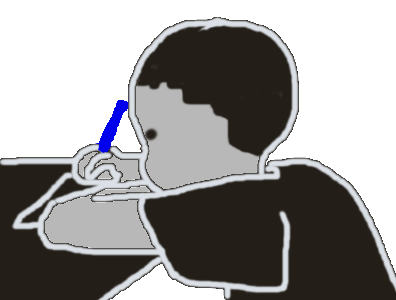 |
Guide d'annotation ResolCoMis à jour le 17 avril 2020 |
Ce guide s’inscrit dans un projet ANR : le projet É-clam qui vise à constituer un vaste corpus d'écrits d'élèves afin de décrire et analyser les compétences d'écriture acquises au fil de la scolarité. Une des compétences d'écriture visée est la mise en oeuvre de stratégies pour gérer la référence et la coréférence c'est-à-dire l'introduction de nouveaux référents, leur maintien dans le discours et la gestion de la compétition et de l'interférence lorsque plusieurs référents coexistent dans le texte.
L'objectif de l'annotation que vous allez réaliser consiste à annoter les chaînes de référence --
Après avoir présenté les textes à annoter dans la section suivante, une définition détaillée des CR et des maillons est fournie avant de présenter la procédure d'annotation et l'utilisation de l'interface Glozz pour procéder à l'annotation.
Les textes que vous allez annoter font partie du corpus Résolco ("Résolution de problèmes de cohésion textuelle") et ont été collectés à l'école primaire et au collège. Les élèves ont produits ces textes en réponse à une même consigne d'écriture. :
Racontez une histoire dans laquelle vous insèrerez séparément et dans l’ordre donné les trois phrases suivantes :
Elle habitait dans cette maison depuis longtemps. (P1)
Il se retourna en entendant ce grand bruit. (P2)
Depuis cette aventure, les enfants ne sortent plus la nuit. (P3)
L'objectif de cette consigne est d'amener les élèves à résoudre plusieurs problèmes de continuité référentielle et notamment d'anaphore référentielle. En effet, la consigne devrait pousser les élèves à devoir introduire, dans les interstices des trois phrases imposées, les référents des expressions référentielles suivantes :
La tâche d'annotation que vous allez effectuer a pour objectif d'identifier les CR liées aux référents humains contenus dans les trois phrases de la consigne en délimitant leurs maillons. La tâche vise donc l'annotation des expressions référentielles et co-référentielles qui concernent les trois référents humains de la consigne, à savoir Elle, Il, les enfants.
L'exemple ci-dessous donne un exemple d'un texte produit au CM1 dans lequel les 3 CR ont été annotées.
Trois couleurs ont été utilisées pour distinguer chaque CR. Cette copie présente une stratégie relativement fréquente qui consiste à regrouper les référents liés à Elle et Il en un référent commun lié à les enfants.
Cet exemple montre également la diversité des expressions référentielles pouvant jouer le rôle de maillon (nom propre, pronom, déterminant possessif, etc.) et la possibilité de CR qui traversent des passages au discours direct (&lq;Vient Manu je vais te montrer ma cabane&rq;). Ces éléments de définitions sont détaillés dans la section suivante.
Une CR est constituée par l’ensemble des expressions référentielles qui renvoient à un même référent et que nous appelons des maillons.
Le texte suivant, produit par un élève de 3e en suivant la consigne ci-dessus, fournit une première illustration des notions de CR et de maillons.
Dans ce texte, les maillons de la CR incluant le pronom Elle de la consigne et dont la première mention est l'expression référentielle une jeune fille du nom de Marie sont surlignés en jaune. Parmi ces maillons, on trouve les expressions référentielles suivantes :
Parmi les éléments surlignés, on trouve également :
Les déterminants possessifs surlignés sont ceux qui coréfèrent au possesseur Marie. Dans ce cas, on voit que l'on ne considère que le déterminant comme constitutif du maillon. Le verbe allait, coordonné avec avait, est surligné pour indiquer que son sujet est le même que celui du verbe avait (voir plus bas la notion de sujet zéro).
Dans ce texte, la totalité des maillons de la CR incluant Elle a été annotée.
L'objectif de cette section est de décrire et d'illustrer la diversité des unités linguistiques susceptibles de constituer les maillons d'une CR. Les exemples proposées sont issus de textes rédigés par des élèves. Chaque exemple est donné sous la forme d'une capture d'écran de l'interface glozz (dont l'utilisation pour l'annotation est décrite plus loin, section 3.1). Les maillons annotés apparaissent encadrés dans des boîtes de couleur. Chaque exemple est précédé d'un titre décrivant le ou les maillons qu'il contient dans l'ordre dans lequel ils apparaissent. En effet, certains exemples contiennent plusieurs maillons appartenant à une même CR. Chacun de ces maillons est décrit dans le titre.
Les types de maillons décrits ci-dessous sont :
Certains contextes spécifiques d'apparition de ces maillons nécessitent des précisions complémentaires :
Les SN indéfinis, définis, démonstratifs (ex.: une fille, la fille, cette fille) sont annotés quand ils réfèrent à un des trois référents humains considérés. La délimitation de ce type de maillon inclut le groupe nominal ainsi que l'ensemble de ses modifieurs (antéposés ou postposés au nom ou au groupe nominal) exceptés les propositions relatives qui constituent un maillon distinct (cf. ici).
Ces modifieurs peuvent être :
Dans le cas où il y a plusieurs modifieurs, ces derniers sont inclus dans la délimitation du maillon. Comme dans l'exemple suivant.
Dans certains cas, les modifieurs peuvent être séparés par une virgule du groupe nominal. Qu'il s'agisse d'appositions ou d'un usage original de la ponctuation, ces modifieurs seront inclus dans la délimitation des maillons qu'ils soient signalés par une virgule ou non. Nous rappelons que les textes à annoter ont été produits par des apprenants chez qui l'utilisation de la ponctuation n'est pas encore complètement stabilisée et peut parfois produire des constructions inattendues.
Les expressions possessives coréfèrent au possesseur qu'elles soient sous la forme d'un déterminant poseesif (sa maison) ou d'un syntagme prépositionnel (la maison de Jack). Dans tous les cas, seul la mention du possesseur doit être délimitée :
Lorsque le nom ou le groupe nominal composant un maillon est modifié par une proposition relative, seul le pronom relatif est à considérer comme un nouveau maillon, et doit être annoté. Le nouveau maillon est donc dans ce cas composé du seul pronom relatif.
On annote les pronoms personnels et démonstratifs. Les pronoms réfléchis en revanche ne sont pas annotés.
Lorsque l'expression référentielle prend la forme d'un nom propre (NPP), celui-ci peut se réaliser sous la forme d'un NPP complet, composé d'un nom et d'un prénom (Zack Ston), du prénom seul (Zack) ou uniquement du nom de famille (Ston).
Pour ce qui concerne l'annotation des NPP complets, le nom et le prénom constituent un même maillon.
Il est fréquent dans les cas de coordination verbale que le sujet ne soit pas répété pour chaque verbe mais uniquement instancié en sujet du premier verbe ("Elle est venue, a vu et a vaincu" vs. "Elle est venue, elle a vu et elle a vaincu"). Dans ces contextes, la seule façon d'annoter le sujet de tous les verbes est d'annoter le verbe lui-même, sans inclure ses auxiliaires en cas de temps composé.
La même situation se rencontre dans les cas de verbes à l'impératif. Dans ces contextes, on annotera le verbe lui-même.
Ajouter nos propres exemples
On considère que le passage au discours direct ne constitue pas une rupture de la chaîne. Ainsi on annote moi comme un maillon de la CR de Jeane, de même que chacune des occurrences du pronom personnel je qui suivent.
Dans le cas où deux ou plusieurs expressions référentielles sont coordonnées (ex : Marie et Jeane), plusieurs situations sont à distinguer :
Ajouter nos propres exemples
L'objectif de l'annotation est double. Il s'agit de :
Il est recommandé de réaliser l'annotation en trois temps : un temps par CR (autrement dit un temps pour Elle, un temps pour Il et un temps pour les enfants). Pour chaque CR, l'identification et la délimitation des maillons consiste en la création d'unités dédiées (voir section 3.2.2). L'annotation aboutit ainsi à la création d'unités de type maillon_Elle, maillon_Il et maillon_lesEnfants (voir section 3.2.3).
En plus de la délimitation, l'annotation des unités maillons nécessite le renseignement d'un certain nombre de traits comme la nature du maillon (SN défini, pronom, sujet zéro, etc.), le fait que le maillon soit de la classe "groupe" ou pas (dans les cas de coordination et référents pluriels) et le degré de certitude de l'annotation (voir ici).
Une fois les unités maillons annotées, une dernière étape de validation consiste à relier entre elles les unités maillons d'une même chaîne (voir section 3.2.6).
Dans les textes que vous allez annoter, certaines expressions linguistiques ont fait l'objet d'un prémarquage ayant pour fonction de faciliter la tâche d'annotation. Il s'agit d'expressions qui, parce qu'elles sont considérées comme référant potentiellement aux 3 référents humains, constituent des maillons-candidats des trois CR considérées. Ces maillons-candidats pourront être validés en leur attributant l'étiquette maillon_Elle, maillon_Il et maillon_lesEnfants.
L'exemple ci-dessous fournit une illustration - pour le même texte que celui que nous avons commenté en introduction de ce guide - du résultat du prémarquage automatique d'unités appelées "maillons-candidats". Ces "maillons-candidats" correspondent à des éléments fortement susceptibles d'être des unités de type maillon_Elle, maillon_Il ou maillon_lesEnfants, à savoir :
Les maillons-candidats sont à considérer comme des propositions qui sont faites à l'annotateur pour l'assister dans sa tâche d'identification des maillons composant des CR. Chaque maillons-candidats doit être validé par l'annotateur. Cette validation s'effectue par l'attribution de l'étiquette adéquate. En terme de procédure d'annotation, cela revient à modifier une unité pour lui attribuer une autre étiquette (voir section 3.2.3). Le prémarquage étant automatique, certains maillons-candidats peuvent parfois paraître surprenants, notamment concernant le prémarquage des noms propres et des pronoms personnels.
Tous les NPP ont été considérés comme des maillons-candidats, même ceux ne pouvant désigner un humain, comme "Vendée" ou "22H" dans l'exemple ci-dessus. Ces maillons-candidats ne doivent évidemment pas faire l'objet d'une validation.
Parfois, un NPP n'a pas été prémarqué, comme le nom "Clément" dans l'exemple ci-dessous.
Dans ce cas, si "Clément" est inclus dans une des CR de la consigne, l'annotateur devra créer une nouvelle unité (voir section 3.2.2)
Il se peut également que les noms propres soient prémarqués de façon incomplète, comme le montre l'exemple ci-dessous où "Mr" n'a pas été inclus dans le maillon-candidat "Mr Wilson".
Dans ce cas, si "Mr Wilson" est inclus dans une des CR de la consigne, l'annotateur peut soit créer une nouvelle unité constituée du nom propre complet (voir section 3.2.2), soit modifier et rédélimiter le maillon-candidat (voir section 3.2.3).
Tous les pronoms clitiques sujets il ont été prémarqués, qu'ils soient dans un emploi personnel (Il se retourna en entendant ce grand bruit) ou impersonnel (Il était un fois, Il pleut, Il est évident que...). Ces maillons-candidats ne doivent évidemment pas faire l'objet d'une validation.
Pour plusieurs raisons, il n'est pas toujours facile de déterminer quel est le référent d'une expression référentielle. Il peut notamment y avoir dans le contexte plusieurs expressions disponibles pour un même référent. C'est le cas ci-dessous où le possessif sa peut coréférer à la vieille femme ou à elle. Dans ce cas, on fera un choix et on annotera uniquement l'expression qui paraît la plus cohérente pour construire l'interprétation, en lui attribuant toutefois une étiquette signalant l'incertitude.
Dans un tel cas, l'annotateur devra indiquer qu'il ressent une incertitude de rattachement du maillon.
Un autre cas d'incertitude peut concerner la délimitation du maillon. Dans un tel cas, l'annotateur devra indiquer qu'il ressent une incertitude de délimitation du maillon.
La procédure pour associer ces degrés d'incertitude à chaque unité est décrite en section 3.2.4.
Il est également possible de laisser, pour chaque unité, un commentaire libre.
L'annotation des CR se fait en délimitant et qualifiant toutes les UNITÉS () qui correspondent aux expressions référentielles référant aux référents humains mentionnés dans les phrases consignes.
L'annotation consiste à valider les maillons-candidats pertinents et à ajouter ceux que le système de prémarquage n'a pas pu détecter.
Trois types d'UNITÉS sont à distinguer :
Pour effectuer l'annotation vous allez utiliser l'interface d'annotation Glozz.
Pour télécharger le logiciel il faut se rendre sur le site suivant http://glozz.free.fr/ et remplir les champs proposés dans la section "Download Glozz".
Il faudra également suivre les indications pour demander une clé d'accès à Glozz, sans laquelle vous ne pourrez pas annoter.
Si vous avez des difficultés à trouver ces indications sur le site, suivez les informations ci-dessous :
Pour installer le logiciel suivez les indications présentes sur le site et sur le manuel : http://glozz.free.fr/glozzManual_1_0.pdf
Une fois l'installation terminée, vous pouvez lancer Glozz. Pour ce faire, vous avez plusieurs possibilités :
Pour que les modifications soient prises en compte il est nécessaire de re-importer le fichier que vous voulez annoter. Si vous ne l’avez pas importé, il suffit de le faire après avoir modifié les paramètres
Toutes les pocédures d'annotation se font avec l'interface d'annotation dans laquelle nous distinguons les zones suivantes :
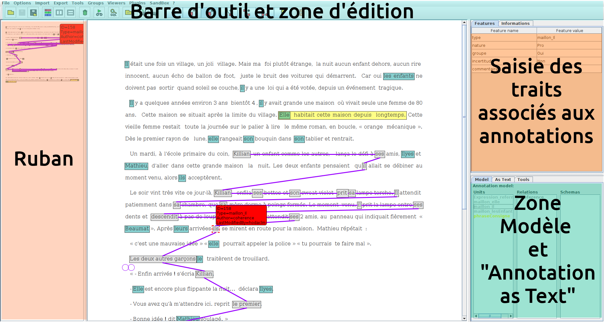
Une fois l'interface ouverte, voici les procédures à effectuer pour charger les fichiers nécessaires à l'annotation :
Charger le document à annoter en cliquant sur le bouton (Open corpus) situé dans la barre d'outils.
Deux éléments doivent être chargés : le texte (fichier avec extension .ac) et le fichier contenant les annotations (fichier avec extension .aa. Vous pouvez également charger un fichier contenant des annotations que vous avez réalisées et sauvegardées (voir la section 3.2.7.).
Bien entendu, les deux éléments doivent porter le même nom, hormis leur extension (e.g. CO-3e-2016-VTAC305-D1-R10-V1.ac et CO-3e-2016-VTAC305-D1-R10-V1.aa ou CO-3e-2016-VTAC305-D1-R10-V1_coherence.aa).
Charger le modèle d'annotation en cliquant sur le bouton 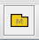 dans la barre d'outils. Sous glozz, un modèle d'annotation est un fichier avec une extension .aam. Pour cette tâche d'annotation, il faut charger le modèle resolco_coref.aam. Les unités et relations à annoter apparaissent alors dans la zone modèle (en bas à droite).
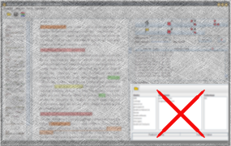
Charger la feuille de style qui permet de colorer dans le ruban et la zone texte les maillons-candidats et les futures annotations. Les phrases consignes apparaissent également colorées. Pour ce faire, cliquer sur le bouton 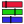 (Style editor) situé dans la barre d'outil, puis sur le bouton (Open style) dans la fenêtre concernée. Le fichier de base pour cette tâche d'annotation se trouve dans le fichier resolco_coref.as
Tout maillon d'une des CR à annoter doit donner lieu à la création d'une unité.
Pour créer une unité qui n'a pas été prémarquée, il faut d'abord sélectionner le type de l'unité à créer, à savoir maillon_Elle, maillon_Il ou maillon_lesEnfants. Par défaut, toute nouvelle unité est associée au type de l'unité précédemment annotée. Si aucune unité n'a encore été créée, la nouvelle unité sera associée au type u_default.
Pour associer un type à une nouvelle unité, sélectionnez le bouton  (Create a new simple Unit) et cliquez sur le type adéquat dans le modèle d'annotation affiché dans la ZONE MODELE.
(Create a new simple Unit) et cliquez sur le type adéquat dans le modèle d'annotation affiché dans la ZONE MODELE.
Passez ensuite à la délimitation de l'unité.
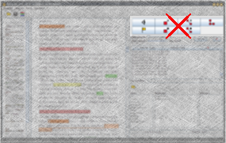
La délimitation des unités peut se faire de deux manières :
Si les délimitations n'apparaissent pas à l'écran cela signifie qu'aucun style n'est associé à l'unité. Vous devez alors vérifiez que l'objet que vous annotez (dont le nom est inscrit et sélectionné dans la zone modèle) a bien un style associé dans la fenêtre Style editor. Si vous ne voulez pas associer de style à l'objet en question mais uniquement le visualiser, choisissez alors d'afficher les annotations sans style (unstyled annotations) :
Barre d'outils : Options > Préférences puis sur l'onglet Viewer : 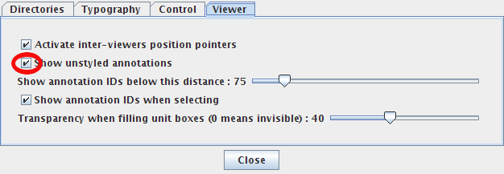
Une fois cette unité créée, il faut renseigner les caractéristiques de cette unité dans la zone modèle de l'interface et notamment la nature du maillon et le degré d'incertitude concernant sa délimitation et son rattachement. Par défaut le maillon est de type pronom et aucune incertitude n'est notée. Pour modifier ces valeurs, il suffit de cliquer sur les champs concernés, de saisir les valeurs et d'enregistrer les caractéristiques en appuyant sur "entrée".
Si vous souhaitez qu'une de vos précédentes annotations ou qu'un maillon-candidat prémarqué correspond bien à un maillon, vous devez modifier une unité.
À tout moment il est possible modifier ou supprimer une annotation en choisissant le mode adéquat dans la zone édition.
sélectionnez l'unité à modifier en cliquant dessus. Les lignes délimitant l'unité se changent en pointillés rouges et deux petits ronds apparaissent aux bornes initiale et finale.
Lorsque le curseur de la souris passe sur une unité annotée, celle-ci change de couleur. En présence d'unités superposées, toutes les unités concernées changent de couleur. Pour sélectionner une unité lorsque les unités superposées ont les mêmes limites, il faut cliquer plusieurs fois pour sélectionner l'unité désirée.
changez l'annotation au niveau de la zone modèle (l'annotation actuelle apparaît surlignée) .
Une fois le type de l'unité modifié, il faut renseigner les caractéristiques de cette unité dans la zone modèle de l'interface et notamment la nature du maillon et le degré d'incertitude concernant sa délimitation et son rattachement. Par défaut le maillon est de type pronom et aucune incertitude n'est notée. Pour modifier ces valeurs, il suffit de cliquer sur les champs concernés, de saisir les valeurs et d'enregistrer les caractéristiques en appuyant sur "entrée".
Si vous souhaitez supprimer une de vos précédentes annotations, il faut:
IL n'est pas demandé de supprimer les unités de type maillon-candidat qui ne sont rattachées à aucune CR. Le fait de ne pas les avoir associé à un type maillon_Elle, maillon_Il ou maillon_lesEnfants suffit.
Une fois les unités maillons d'une CR créées, une dernière étape consiste à valider la chaîne en reliant tous ses maillons par une relation de coréférence.
Pour cette étape, il est recommandé de cacher les maillons-candidats et les maillons des autres CR en jouant avec les styles (voir section 3.2.8)
Pour relier des unités entre elle, il faut sélectionner le bouton 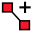 et cliquez sur le type "Coreference" dans la colonne "Relations" du modèle d'annotation affiché dans la ZONE MODELE.
Passez ensuite à la sélection des maillons à relier en cliquant simplement sur chaque unité maillon à relier.
Vous pouvez à tout moment modifier ou supprimer une relation en cliquant sur le bouton 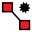 pour la sélectionner et ensuite choisir soit de la modifier, soit la supprimer en appuyant sur la touche Suppr du clavier
Les glue notes
À tout moment, il est possible d'associer un commentaire à une annotation ou à n'importe quelle position dans le texte par le biais de glue note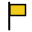.
Pour cela, cliquer sur l'icône et remplissez le cadre jaune qui s'affiche. Vous pouvez ensuite éditer ces glue notes ou les supprimer, une par une ou toutes ensemble.
Pour enregistrer vos annotations, cliquez sur le bouton (Save Annotations). Nommez le fichier d'annotation selon le format suivant : NomTexte_NomAnnotateur_JJmoisAA.aa (ex : CO-3e-2018-FSBJC6-D1-R4-V1_hodac_01janvier09.aa)
Vous pouvez, à tout moment et selon votre convenance, modifier le jeu de couleur ou choisir de ne pas colorer tel ou tel type d'unité. Pour ce faire, ouvrez le style resolco_coref.as et cliquez sur l'unité dont la couleur est à modifier, ou cochez la case Hide pour ne plus voir son surlignement.
ATTENTION!! Il se peut que plusieurs fenêtres Style Editor soient ouvertes simultanément (si vous avez à chaque fois cliqué sur le bouton ). Du coup, vos modifications peuvent ne pas prendre effet. Pour être sûr de modifier le 'bon' jeu de style, vérifiez dans la barre des tâches qu'un seul apparaît. Si plusieurs fenêtres sont ouvertes, fermez les toutes pour n'en laisser qu'une sur laquelle vous ferez vos modifications (que vous pourrez sauvegarder en cliquant, dans la fenêtre Style Editor, sur le bouton ).
Auteurs : Silvia Federzoni, Josette Rebeyrolle, Lydia-Mai Ho-Dac (version : 1 avril 2020)
|
Ce guide est disponible sous licence
Creative Commons By-NC-SA 3.0
(Patternité, usage non commercial, partage à l'identique). Merci de la lire attentivement. |
 |
{kind=link}
{kind=link}
{kind=link}
{kind=link}
{kind=link}
{kind=link}
Il peut s'avérer rapidement difficile de distinguer les différents niveaux de structuration. Pour cela, l'interface propose un outil appelé Depth Selector qui permet de jouer sur les niveaux d'annotation visibles. Pour activer cette fonction, cliquez dans la barre d'outils sur Tools puis Depth Selector. La boîte de dialogue suivante apparaît alors dans la zone droite de l'interface : 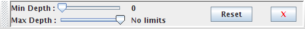.
Il suffit ensuite de manipuler le curseur pour faire varier l'affichage des différents niveaux d'annotation.